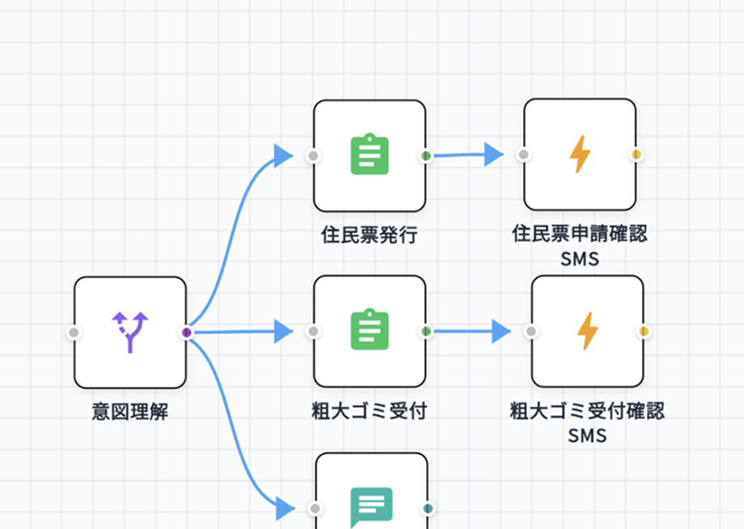
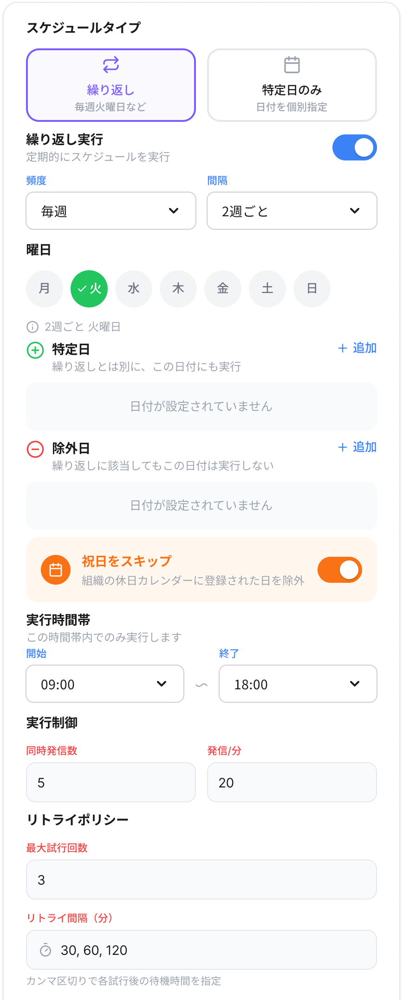

SwarrowCallのご紹介
SwarrowCallのご紹介
株式会社Vecta
02
会社紹介
会社名
株式会社Vecta
住所
〒150-0002
東京都渋谷区渋谷2-19-15 宮益坂ビルディング609
事業内容
- SwarrowCall事業（AIサポートセンターサービス）
-
開発受託事業
- Webシステム
- モバイルアプリ
- AI基盤
03
問い合わせ対応/連絡業務の課題
自治体の窓口業務では、定型問い合わせや連絡業務に多くの時間がかかりやすいと考えています。
| 入電の集中 | 繁忙期には1日中電話が鳴り続け、代表電話や各課の窓口業務が止まりやすい |
| 取り次ぎ負荷 | 用件の聞き直しや担当課への取り次ぎが多く、職員の業務が中断されやすい |
| つながらない不満 | 混雑時に電話がつながらず、クレームや予約なし来庁、書類不足での来庁が発生しやすい |
| 定型質問の反復 | マイナンバー、保険、子育てなど、回答パターンが近い質問が繰り返し寄せられる |
| 連絡業務の負荷 | リマインド、督促、見守りなどの電話連絡に時間がかかり、他業務を圧迫しやすい |
04
Vectaの提案する課題解決
Vectaは、電話・チャット・架電を一つの仕組みでつなぎ、窓口業務をまとめて改善します。
| 入電の集中 |
AI受電
開庁時間案内、担当課案内、一次受付を自動化し、代表電話の負荷を下げる
|
| 取り次ぎ負荷 |
AI受電 + 転送
用件に応じて担当部署へ振り分け、聞き直しやたらい回しを減らす
|
| つながらない不満 |
AI受電 + AIチャット
混雑時でも音声案内とHP/公式LINEへの誘導を組み合わせ、自己解決につなげる
|
| 定型質問の反復 |
AIチャット / 音声FAQ
よくある質問を自動で返し、職員が繰り返し説明する時間を減らす
|
| 連絡業務の負荷 |
AI架電
リマインド、督促、見守りなどの電話発信をまとめて実行する
|
05
3つの機能
SwarrowCallは、受電・チャット・架電の3機能で問い合わせ対応と連絡業務をまとめて改善します。
AI受電
代表電話の一次受付、担当課案内、転送をまとめて自動化します。
AIチャット
ホームページや公式LINEに設置し、自己解決の導線を作ります。
AI架電
リマインドや督促、安否確認などの連絡業務をまとめて自動化します。
06
電話問い合わせ対応・受付
電話の一次受付は、AIで24時間自動化できます。
24時間365日で一次受付
閉庁後や繁忙時でも、AIが電話の入口を止めません。
FAQ回答と担当課案内
よくある質問への回答、窓口案内、適切な部署への転送に対応します。
ノーコードで会話フロー作成
対象業務に合わせた受け答えや分岐を、管理画面から柔軟に調整できます。
人への引き継ぎ
AIで完結しない問い合わせは担当者へ戻す前提で設計できます。
後続連携
会話内容をもとにSMS送信や外部連携へつなげられます。

会話フロー管理画面
ノーコード調整
会話フローや分岐条件を管理画面から更新できます。
後続連携
SMS送信や外部連携にもつなげやすい構成です。
6-1
電話機能の自治体活用例
電話機能は、総合窓口や複数の課の業務でお使いいただけます。
総合窓口・代表電話
- 開庁時間の案内
- 担当課の案内
- 適切な部署への転送
住民課
- マイナンバーカードの受け取り、暗証番号、電子証明書、有効期限、持ち物案内
子育て・福祉
- 制度や手続きに関する質問対応
- 電話による見守りや状況確認
税務
- 納期限、納付方法の案内
- 督促や提出促進の電話連絡
健康・健診
- 健診案内、持ち物、予約変更の一次受付
多言語化
- 英語など多言語の一次案内は、要件確認のうえで追加訴求候補
07
問い合わせ対応チャット機能
HPや公式LINEにAI窓口を置くことで、自己解決を増やせます。
設置先を選べる
ホームページや公式LINEに設置し、住民が使いやすい導線を作れます。
既存資料を参照して回答
FAQや業務資料をもとに、組織ごとの案内に寄せて返答できます。
24時間365日で対応
時間外でも自己解決できる窓口を残せます。
人への引き継ぎ
AIで答え切れない場合は担当者対応へつなげる設計にできます。
継続改善
会話ログを見ながらFAQや回答ルールを調整しやすい構成です。
設置イメージ
設置先
ホームページや公式LINEに配置しやすい構成です。
回答ソース
FAQや業務資料を参照しながら案内できます。
7-1
チャット機能の自治体活用例
チャット機能は、FAQが多い部署ほど効果を出しやすいです。
住民課
- 住民票、戸籍、転入転出の手続き案内
- マイナンバーカードの申請、受取予約、暗証番号、電子証明書に関するFAQ
ごみ・環境
- 分別ルール、収集日、粗大ごみ受付案内
子育て支援
- 手当、保育園、健診、予防接種のFAQ対応
観光・イベント
- 施設情報、イベント案内
- 多言語一次対応
08
架電機能
SwarrowCallは、受ける対応だけでなく、必要な連絡も自動化できます。
自動架電
スケジュールや対象者一覧に基づいて、AIが必要な連絡をまとめて実行します。
大量件数に対応しやすい
数百件から数千件のリマインドや確認連絡を回しやすい構成です。
用途別の会話設計
安否確認、督促、予約確認など、業務ごとに会話フローを分けて運用できます。
回答回収
相手の反応を受けて、次の対応につなげることができます。
SMSや後続フロー連携
架電後の案内送付や別システムへの連携にも展開できます。

架電運用イメージ
発信対象
対象者一覧に基づいて、必要な連絡をまとめて実行できます。
後続対応
回答回収やSMS案内など、次の対応にもつなげられます。
8-1
架電機能の自治体活用例
架電機能は、リマインドや督促、安否確認などの連絡業務を自動化できます。
健康増進
- 健診、面談、予防接種のリマインド連絡
税務・保険
- 納期限前のお知らせ
- 書類提出の促進
介護・福祉
- 高齢者の安否確認
- 訪問前確認
防災・危機管理
- 緊急時や訓練時の一斉確認連絡
09
精度と安全性
精度は、Document Intelligence と運用チューニングの組み合わせで高める設計です。
高精度回答のための設計
1
Microsoft Document Intelligence
文書構造をもとに、見出し・段落・表のまとまりを読み取りやすい形へ整えます。
2
弊社チューニング
文書の区切り方や参照しやすさを調整し、重要な注意事項が分断されにくいようにします。
3
皆様の文書チューニング
FAQや回答ルールを整理し、対象業務に合わせて精度を継続的に高められる運用にします。
安全性
データの扱い
- やり取り内容や登録データは、外部AIプロバイダの学習に利用されません。
回答品質の担保
- 既存のFAQや業務資料をもとに、組織ごとの情報に沿った回答を返します。
- 答えにくい内容は無理に返さず、人に戻すことで実運用品質を担保します。
運用改善
- 会話ログやFAQ更新を見ながら、回答ルールを継続的に調整できます。
10
導入の流れ・実証実験
まずは1部署・1業務から実証をお勧めしております。
1
ヒアリング
対象部署、対象業務、対象チャネルを決め、現状のFAQや資料を確認します。
2
セットアップ
資料投入、導線設定、応答ルール調整を行い、実証実験の準備を進めます。
3
運用開始
応答率、引き継ぎ率、削減工数を見ながら、他部署への横展開を判断します。